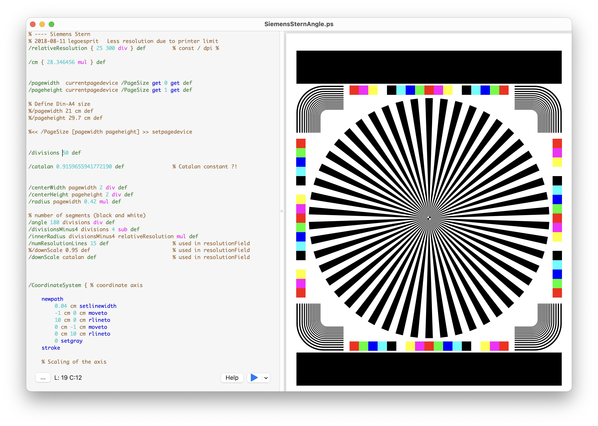
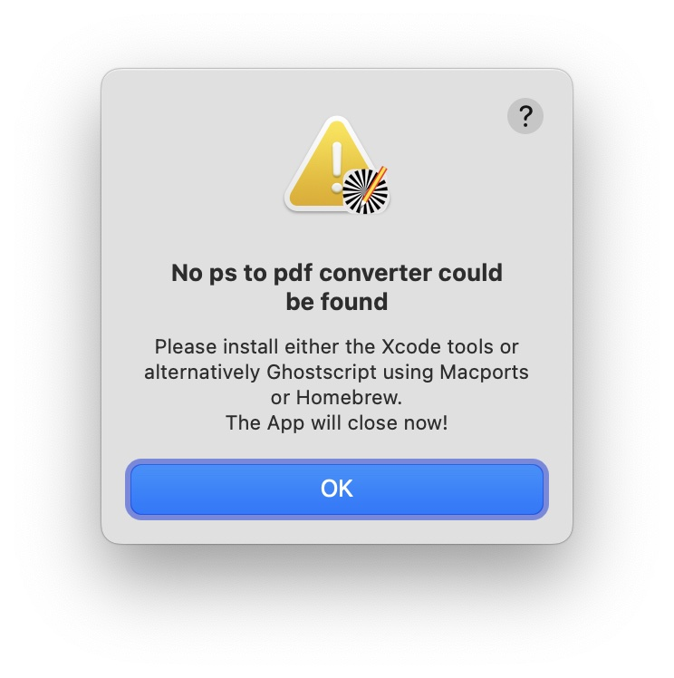

This application provides a simple tool to display and convert Postscript files to PDF. This fills the gap the left behind after the Preview Application not supporting Postscript anymore under Ventura.
The application owns a simple Postscript text editor on the left and a PDF display on the right. Similar to the Xcode Playgrounds you can select to update the PDF graphics on the right continuously or just manually by pressing the blue play button.
To start the application for the very first time, you need to right click the application symbol and press open. This is caused by being an unregistered developer. Later just double click on a .ps file or the application should be sufficient.
The App provides a simple text editor with limited syntax highlighting capabilities. It can be used to view Postscript files and to convert them into their respective PDF counterpart. For the display and conversion a GhostScript converter is being used, that must be installed before running the software ( Prerequisites ).
In case no appropriate Postscript convert could be found, the following message is being displayed and the application closes.
